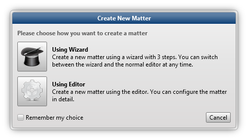
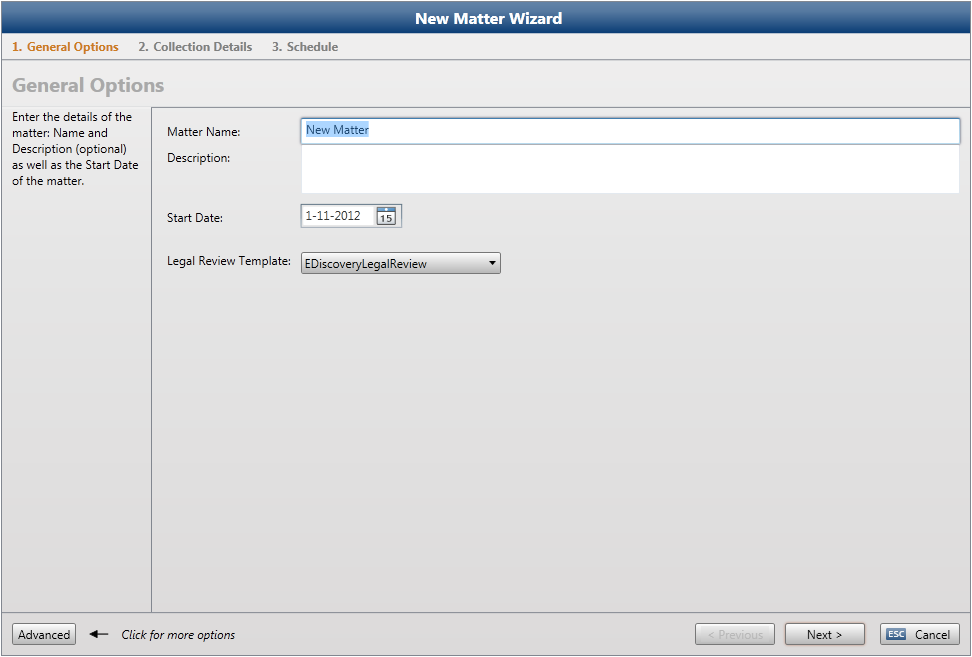
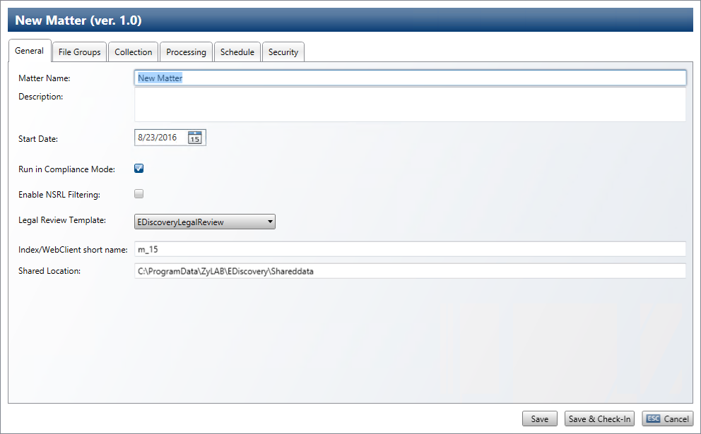
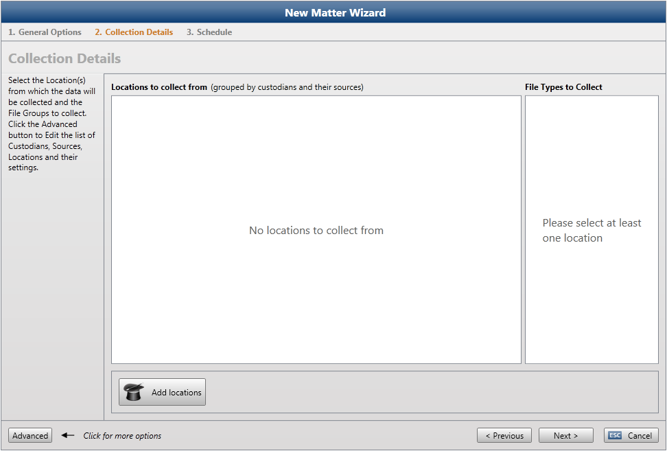
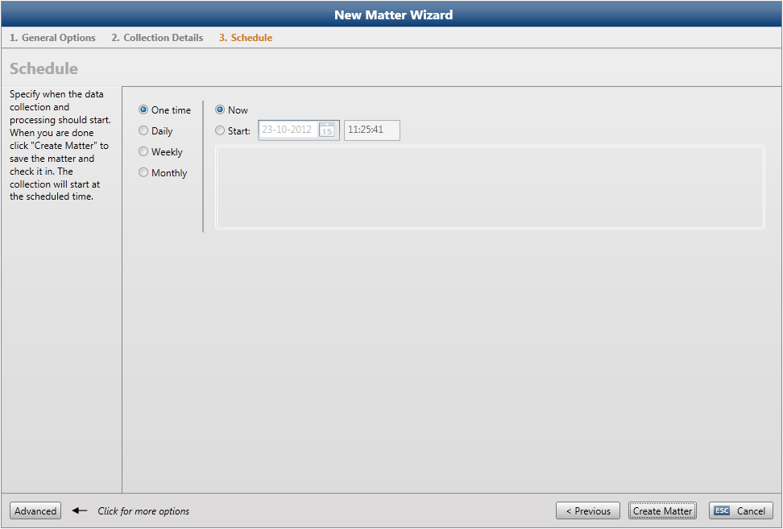

During the identification phase of the eDiscovery process, a matter is defined in ZyLAB Legal Processing. To determine the scope of data potentially subject to preservation and disclosure, the following actions are taken:
a - Determine key time frames:
Based on the discovery request, determine the relevant time period to the matter. To define the relevant time period in ZyLAB eDiscovery Legal Processing, see Define the Job Schedule.
b - Identify key players/custodians:
Who in the company should be consulted? Should identification be based on department, geography, job function or other criteria, such as date ranges or domain names. During the meet-and-confer process the key players and what kind of data can be expected from them will be discussed.
Learn how to define custodians in ZyLAB eDiscovery Legal Processing, see Define Custodians.
c - Map the client's information systems:
What are the data sources and how is the infrastructure designed? Which offsite or third-party systems are used? To define data sources and locations in ZyLAB eDiscovery Legal Processing, see Define Sources and Locations.
d - Identify potentially relevant file types:
Are only certain types of data relevant? Can all other types be excluded from the search? Relevant file types should be discussed during the meet-and-confer process. To define relevant file types in ZyLAB eDiscovery Legal Processing, see Define File Groups and Link File and MIME Types to Processors.
For more information on actions needed to determine the scope of the data potentially subject to preservation and disclosure, see http://www.edrm.net For now, it is important to know that for the initial creation of a new matter, you need to have some knowledge about the relevant time period of the matter (Define the Job Schedule), the custodians (see Define Custodians), the sources and locations of data (Define Sources and Locations) and potentially relevant file types (Define File Groups and Link File and MIME Types to Processors).
Instructions
- ZyLAB Legal Processing is open.
It is a best practice to define the Global Settings first. See Edit Global Settings.
- Select the New button. The Create New Matter dialog will appear.
 - Select Using Wizard (quick configuration) or Using Editor (detailed configuration). You can switch between the two at any time with the Wizard/Advanced button at the bottom left corner of the dialog.
- Click Remember my choice, to automatically open the Wizard or Editor next time you create a new matter. Note: You cannot undo this choice!
- The General Options tab of the Wizard appears.
- Define the Matter Name.
- Describe the matter at hand. You might want to add information about the scope of the responsive data.
- If you know when the relevant time period to the matter starts, you can define the Start Date.
- Select a Legal Review Template.
- Click Next
or click the Advanced button to switch to the Editor.
 - To run in compliance mode, make sure the checkbox is selected.
In compliance mode, both the metadata (time created, length, access data, etc.) and the contents of the files will be checked to prevent that files will be collected twice during recollection. A decrease in performance might be noticed.
Without the checkbox selected, only the metadata will be compared to prevent that files will be collected twice.
- To show that NSRL (or NIST) exclusions exist, you can now select the check box 'Enable NSRL Filtering'. With that check box selected, it is logged and reported that NSRL files existed in the original collection, but were excluded.
- Define the short name of the Index/WebClient.
- On the shared location, the following folders will be created:
Assemblies
The Assemblies folder contains all settings that apply for a created matter. This includes Collectors, Indexers and Processors.
CollectingResults
The CollectingResults folder contains all the collected data per job. The Collected Data will be copied to the temp folder and then be processed by any processor selected.
ProcessingOutput
The output of the selected processors will be placed in the ProcessingOutput folder. - Click the Wizard button to return to the Wizard.
- Click Next.
The Collection Details tab will appear.
 - Here you select Locations to collect from and File Types to collect. To define locations, click the Advanced button to switch to the Editor or click the Add Locations button. For more information on defining Custodians, Sources and Locations and defining File Types/Groups, see
If you select the Add Locations button, you go through a Wizard and define or import custodians, add sources, add location types (collectors) and specify parameters for the selected locations type. For more information on this wizard, start with step 5a of Define Custodians.
- If Locations have already been defined, select one or more location to collect from. Then, select the File Types that need to be collected.
- Click Next.
The Schedule tab will appear.

Choose from four options:- One time
Define the start date and time. To immediately run the schedule, select Now. - Daily
Define the start date and time. Define in days how often the schedule must be run. - Weekly
Define the start date and time. Define in weeks how often the schedule must be run. Select a day of the week on which the schedule must run. - Monthly
Define the start date and time. Select one or more months in which the schedule must run. Select one or more days of the month or select weeks and days of the month on which the schedule must run.
- One time
- Click the Advanced button to switch to the Editor. For more information on defining the Job Schedule, see Define the Job Schedule.
- Select the Security tab to Define Security Settings.
- Click the Wizard button to return to the Wizard.
- Click Create Matter to save the matter and check it in.
Result
You have created a new matter.
Note
Searching using the Search Box (top right corner) allows the user to search any text in a Matter’s name. It does not have to be the letters with which the Matter’s name starts.
|
|
|
|
|